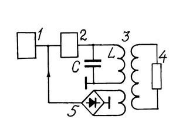
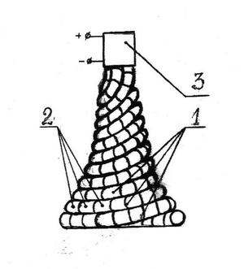
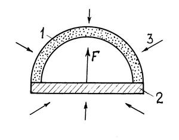

Эфироэнергетика


Под словом эфир здесь подразумевается не то
химическое соединение, которое применяется в медицине и которым
авиамоделисты заправляют моторы своих самолётов. Это вещество могло бы
быть топливом только традиционной энергетики, которая всегда что-то
потребляет и загрязняет окружающую среду. Современные учёные и
изобретатели такими пустяками не занимаются. В альтернативной энергетике
XXI века имеют дело с мировым эфиром. Это тот эфир - ether, в
который древние греки поселили своих многочисленных богов и розовым
сиянием которого любовались на утренних и вечерних зорях. В мировой эфир
выходят радисты и телеведущие. Его воспевают поэты: «Так с головы Ахиллеса блистанье в эфир подымалось» (Гомер), «Ночной зефир струит эфир» (Пушкин), «В пространстве синего эфира один из ангелов святых летел на крыльях золотых» (Лермонтов).
В науку понятие об эфире вошло благодаря Декарту, предложившему в начале
XVII века концепцию мироздания, согласно которой пустоты нет, а всё
пространство от космического, до внутриатомного заполнено невидимой,
невесомой средой – эфиром. Ввиду того, что эфир без сопротивления
проходит сквозь любые тела, его нельзя увидеть, осязать или обнаружить
приборами. Майкельсон, считавший эфир светоносной средой, пытался
выявить его с помощью своего интерферометра, но потерпел неудачу [1].
Только в наше время, имея пару спутников с установленными на них
фемтосекундными лазерами и атомными часами, измеряя время
распространения света в направлении движения Земли и навстречу ему,
можно в принципе установить наличие этой среды и нашу скорость в ней.
Пока же эфир не обнаружен, и традиционными учёными считается, что его
вовсе нет.
Что же представляет собой эта мифическая среда Вселенной? Одни считают,
что газ, состоящий из мельчайших частичек – амеров шарообразной [2 - 4]
или иглообразной формы [5]. Но тогда в нём не могли бы распространяться
поперечные электромагнитные волны. Другие склоняются к мнению, что это
твердое тело кристаллической структуры [6, 7], состоящее из
заряженных позиронов и негаронов [6]. Только непонятно как в нём мы
движемся, не встречая сопротивления. Специалисты по квантовой теории
поля уверены, что эфир – это физическое пространство, заполненное
бесконечным числом непрерывно появляющихся и аннигилирующих частиц,
античастиц и их полей. Советские философы, руководствуясь методом
диалектического материализма, признали такую среду особым видом материи,
превратив виртуальное, т.е. выдуманное, нереальное, в объективную
реальность, данную нам в ощущениях.
Относительно энергосодержания эфира мнения также сильно расходятся. По
квантовой электродинамике это 1095 эрг/см3, по В.А. Ацюковскому –
1,3.1036 Дж/м3 [4, с. 7]. Профессор С.Г. Бураго нашел, что в каждом
кубометре содержится 8,7.1032 эрг энергии [8]. С невероятной «точностью»
нашел её И.Г. Железнов, получив значение 1,80786253533.104 эрг/см3 [5].
Несмотря на расхождение, данной энергии, учитывая бесконечный объем
эфира, хватит на обеспечение всех постоянно растущих потребностей
человечества. Только как эту энергию у него взять?
Ещё в конце XIX века бывший цирковой трюкач Джон Эрнст Уоррел Кили
демонстрировал публике вечный двигатель, действующий на «эфирной силе».
В 1874 году он создал фирму, которая успешно продавала его изобретение,
не разглашая принципа действия. Суд дал ему 60 дней на раскрытие сути
технического решения. Но и после решения суда Кили не раскрыл тайны, за
что был посажен в тюрьму. Секрет двигателя раскрылся только в 1898 году
после смерти автора. Оказалось, что в подвале дома циркача стоял сосуд
со сжатым воздухом, от которого шла труба к аппарату. При незаметном
нажатии ногой на клапан сжатый воздух и начинал вращать мотор.
Второй подобный действующий двигатель был создан Николой Тесла – самым
известным ученым с альтернативным мышлением (галлюцинации, вспышки
света, припадки при виде жемчуга, лихорадка при взгляде на персик,
боязнь чужих волос, импульсы от марсиан, таинственные сексуальные
наклонности и т.д.). В 1901 году он запатентовал аппарат для улавливания
энергии космоса в виде пластинки слюды между обкладками конденсатора.
По словам биографа Марка Сойфера [9], он переоборудовал свой автомобиль
«Пирс Эрроу», заменив мотор на электродвигатель и вмонтировав в
приборный щиток энергоприемник, состоящий из коробки с двенадцатью
радиолампами и антенны длиной 6 футов. Для запуска машины нужно было
лишь потянуть за кабель. Нефтяные магнаты, говорят, не дали Тесле
внедрить его разработку.
В наше время выдающихся результатов в эфирной энергетике добился д.т.н.
профессор В.А. Ацюковский [4]. К трансформатору Теслы 3 он добавил цепь
обратной связи 5 и электронный коммутатор 2 (рис. 1). При
подключении стартерного источника 1 и прерывании его тока коммутатором 2
в контуре LC возбуждаются собственные колебания резонансной частоты.
Повышающий трансформатор 3 передает полученный переменный ток на
нагрузку 4. Далее,

Рис. 1. Схема эфирного источника тока Ацюковского: 1 – стартер, 2 – коммутатор, 3 – трансформатор Теслы, 4 – нагрузка, 5 – цепь обратной связипо словам автора, «поскольку диаметр вторичной катушки меньше диаметра первичной, то давление эфира загоняет вихревое магнитное поле во вторичную катушку, сжимая его и отдавая ему часть потенциальной энергии давления эфира; поэтому энергия, получаемая с вторичной катушки, оказывалась больше, чем энергия, закачанная в первичную катушку» ([4], с. 63). Для работы аппарата без внешней подпитки стартер 1 после разгона отключается, а питание идёт по цепи обратной связи 5 с дополнительного выхода трансформатора 3. Получается вечный двигатель, дающий электроэнергию без потребления топлива. Автор предупреждает об опасности – вся система пойдёт вразнос, если коэффициент усиления замкнутого контура окажется больше единицы! Такие трудности самим автором пока не преодолены. Поэтому он пишет, что «реализация потребует упорного труда и изобретательства при решении многих промежуточных проблем, которые неизбежно возникнут» (с. 65). А главные трудности им уже решены!
С помощью эфира Ацюковский не только обеспечил мир энергией, но и «научно» объяснил НЛО, полтергейст, биополе человека, геопатогенные зоны, действующие вулканы на Луне, магнетизм небесных тел, солнечную энергию, шаровую молнию. Даже взрыв у нефтебазы в Сасовском районе Рязанской области 12 апреля 1991 года он связал с выбросом эфира из Земли. За решение эфирных проблем В.А. Ацюковскому присвоены звания Почетного члена Российской академии электротехнических наук, действительного члена Российской академии естественных наук, академика Международной академии биоэнерготехнологий, Международной академии энергоинформационных наук, члена Российской академии космонавтики. Он стал лауреатом конкурса «Техника – колесница прогресса», получил Золотую медаль. Однако в интернете в энциклопедии лженаук почему-то оказался в списке фриков, т.е., мягко выражаясь, чудаков.
Академик не знает, что КПД хорошего силового трансформатора в лучшем случае составляет 98 %. У трансформатора Теслы, не содержащего железного сердечника и имеющего большие поля рассеяния, он существенно ниже. Трансформатор может повышать поданное на него напряжение, но одновременно понижает силу тока, в результате чего его выходная мощность всегда оказывается ниже входной. Так как дополнительных источников энергии после отключения стартера в генераторе Ацюковского нет, то опасаться, что он пойдёт вразнос, оснований нет. Автор может проверить это на макете.
Учтя, что минус на минус даёт плюс, харьковский инженер А.Ш. Якубов взял несуществующий эфир ( - ), разогнал его несуществующим торсионным полем ( - ) и получил реальный (с его точки зрения) электрический ток ( + ) [10]. Его похожий на градирню аппарат (рис. 2), получивший название «эфирный магнитно-торсионный насос», перекачивает энергию мирового эфира в электрические сети Украины. «Насос» представляет собой трёхзаходную коническую спираль 1, набранную из магнитных элементов 2 (могут быть как постоянные, так и электромагниты). На вершине конуса установлена обмотка 3

Рис. 2. Магнитно-торсионный эфирный насос Якубова: 1 – спирали, 2 – магнитные звенья, 3 – обмотка съема электроэнергиидля снятия тока на нагрузку. Монтаж эфирной электростанции рекомендую вести на градирнях больше не нужных ТЭЦ, выбросив все их топки, котлы и турбины.
Принцип действия генератора Якубова, по его словам, следующий. Разность напряженностей магнитного поля у вершины «градирни» и её основания создаёт торсионное поле. «Исходящие из вершины конуса силовые линии – торсионы, суммируясь, образуют более мощный торсион. Под его влиянием и влиянием разности магнитных потенциалов вещество эфира приходит в движение, подобно водовороту» ([10], с. 4). В результате на обмотке 3 появляется ЭДС. Якубов, как и Ацюковский, ссылается на Теслу, недостроенная башня которого якобы была аналогичным эфирным насосом. Автор тоже предупреждает об опасности экспериментов с подобными аппаратами – это, говорит, игра обезьяны с гранатой! Поэтому сам собрать макет не решился.
Электростанция по замыслу Якубова должна давать постоянный электрический ток. Однако нетрудно получать и привычный переменный ток. Для этого достаточно обмотку 3 вращать над «градирней» моторчиком с частотой 50 Гц вокруг горизонтальной оси. Однако всё это делать бессмысленно, так как никакого тока не будет. Эфир, если и существует, то ничем не разгоняется и никакой работы совершать не может, так как по определению он всепроникающая среда и ни с чем не взаимодействует. В добавок к этому, разгонного «торсиона» тоже не существует. Поэтому заниматься генератором Якубова нет смысла.
Доктор технических наук, действительный член Российской академии инженерных наук, а также Международной академии высшей школы И.Г. Железнов, определивший с невиданной точностью энергию эфира, не мог не создать и двигателя на этой энергии (с. 178 книги [5]). Предложенный им летательный аппарат состоит из верхней полусферической оболочки 1 и нижней плоской 2 (рис. 3). При этом «верхняя оболочка полупрозрачна для

Рис. 3. Аппарат Железнова
набегающих на неё сферических потоков эфира 3, а нижняя представляет собой обычное вещество с сотовой структурой. Полупрозрачность верхней оболочки можно достичь, если атомы, входящие в её состав, перевести в возбуждённое состояние. В этом случае протоны и электроны таких атомов начнут значительную часть потоков эфира преобразовывать в звуковые волны и в частицы Планка, а поэтому на основание модели летательного аппарата будут воздействовать потоки эфира меньшей интенсивности. Тогда по вполне понятным причинам возникает сила F». Сила F, по мнению автора, и поднимет аппарат в небо. При желании аппараты можно поставить на лопасти турбины, и они будут вращать ротор электрогенератора или колёса автомашины.
Очень трудно возразить академику ввиду полного отрицания им физики и техники. Даже при наличии сферических потоков эфира и нужных материалов для оболочек, никакой результирующей подъемной силы F возникнуть не может, так как прозрачность или полупрозрачность веществ во всех направлениях одинакова. Поэтому автор на своём аппарате может летать лишь над гнездом кукушки.
Не мог обойти затронутой темы и киевский изобретатель Б.В. Болотов, давший в своей медицинской книге «Здоровье человека в нездоровом мире» [11] специальную главу «Эфирная энергетика». Народного академика Русской академии в Казани Болотова неоднократно показывали по московскому телевидению с его аппаратом, в который по одному шлангу поступает вода из-под крана, а из другого вытекает бензин. О нём писали газеты. Разве можно обойти человека с 600 изобретениями (с его слов), открывшего таблицу Болотова, содержащую более 10000 химических элементов, получающего кремний со свойствами алмаза, «ферментами» излечивающего любые болезни, включая неизлечимые! Только в 1990 году Болотов освободился из колонии усиленного режима, где пробыл 7 лет. До этого год провёл на психиатрических экспертизах в Киеве и Москве. По его словам, признали вменяемым, так как очень хотели усадить в тюрьму. Выдвигался кандидатом в президенты Украины – не прошёл, так как не знал мовы. С детства слышит голоса Солнца, которые и подсказывают ему гениальные идеи.
Энергетику предлагает строить на открытом им явлении самофокусировки волн эфира – «эльфонных колебаний» Солнца. Явление позволяет самоусиливать электричество и расщеплять кислород на углерод и дейтерий, получая из воды углеводороды. Свои разработки оценил в 10 триллионов рублей, которыми готов «облагодетельствовать каждого жителя державы». Почему медлит украинское руководство? Не переманить ли гения в Россию?
Ко мне как-то обратился работник Газпрома с просьбой помочь его земляку оформить патентную заявку на изобретение бестопливного генератора тока. Генератор представлял собой моток эмалированной медной проволоки от трансформатора, размещенный в стеклянной банке. К концам торчащих проводов через диод с конденсатором подключен электронный вольтметр, который всегда показывает небольшое и меняющееся со временем напряжение. Я написал ему заявку на устройство для подзарядки маломощных аккумуляторов, например, часов, выбросив стеклянную банку и заменив моток проволоки на антенну. Однако изобретатель пропал. Как после выяснилось, он заметил, что показания вольтметра зависят от фаз Луны и стал исследовать это явление, бродя лунными ночами по крышам домов. Его сняли с крыши и поместили в психдиспансер для лунатиков. Несмотря на то, что изобретатель был официально признан психически больным, он оказался самым здоровым из всех эфироэнергетиков, так как в отличие от них предложил не вечный двигатель, а реально работающий источник тока. Энергия у него хотя и поступала из эфира, но эфира радиостанций и телецентров.
Таким образом, наши поиски альтернативной энергетики на эфире окончились неудачей. Обилие титулов, званий и наград у изобретателей вечных двигателей не гарантирует от их безграмотности и вранья и должно вызывать интерес не у энергетиков, а скорее у психиатров. Реально добыть энергию из эфира, если он и существует, невозможно, так как эта среда, как говорят теоретики, находится в наинизшем энергетическом состоянии.
ЛИТЕРАТУРА
1. В. Петров. Несостоятельность опытов Майкельсона и выводов из них. Инженер, 2011, № 7, с. 27 – 29
2. В.А. Ацюковский. Общая эфиродинамика. М., Энергоатомиздат, 1990
3. В.А. Ацюковский. Эфиродинамические гипотезы. М., Петит, 1997
4. В.А. Ацюковский. Эфиродинамические основы электромагнитных явлений (в популярном изложении). М., Петит, 2007
5. И.Г. Железнов. Физика эфира. М., Белые альвы, 2010
6. В.О. Шахов. Эфир – среда существования Вселенной. М., Спутник, 2003
7. К.Ф. Колхир. У вакуума – структура кристалла. Чехов МО, 1995
8. С.Г. Бураго. Тайны межзвёздного эфира. М., МАИ, 1977
9. Сейфер Марк. Никола Тесла. Повелитель Вселенной. М., Эксмо Яуза, 2008
10. А. Якубов. Неклассический взгляд на природу электричества и магнетизма. Инженер, 2009, № 7, с. 2 – 5
11. Б. Болотов. Здоровье человека в нездоровом мире. М., Питер, 2011